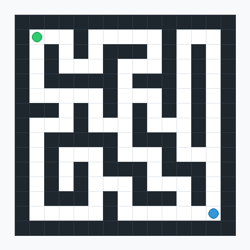
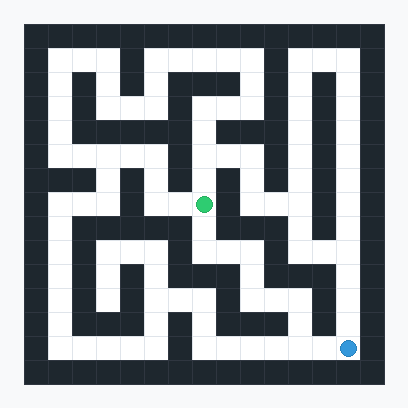
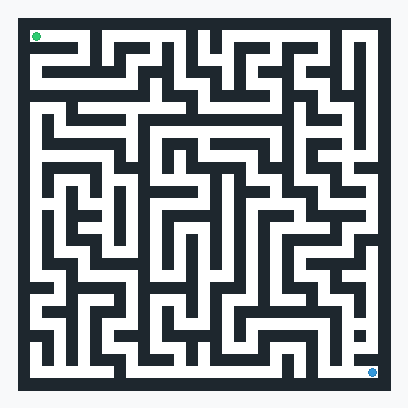

A* Search is an informed search algorithm that uses heuristics (such as Manhattan distance) to estimate the remaining distance to the exit. By evaluating both the cost to reach a cell and the estimated cost to the goal, A* efficiently finds the shortest path while exploring fewer cells than uninformed algorithms.

How A* works: Unlike BFS and DFS which search blindly, A* uses a heuristic (an educated guess of the remaining distance) combined with the distance already travelled. This prioritizes paths pointing directly toward the goal, finding the shortest path while exploring far fewer dead ends.
Every step in A* goes:
Middle-Start Maze:

2× Dense Grid Maze:
